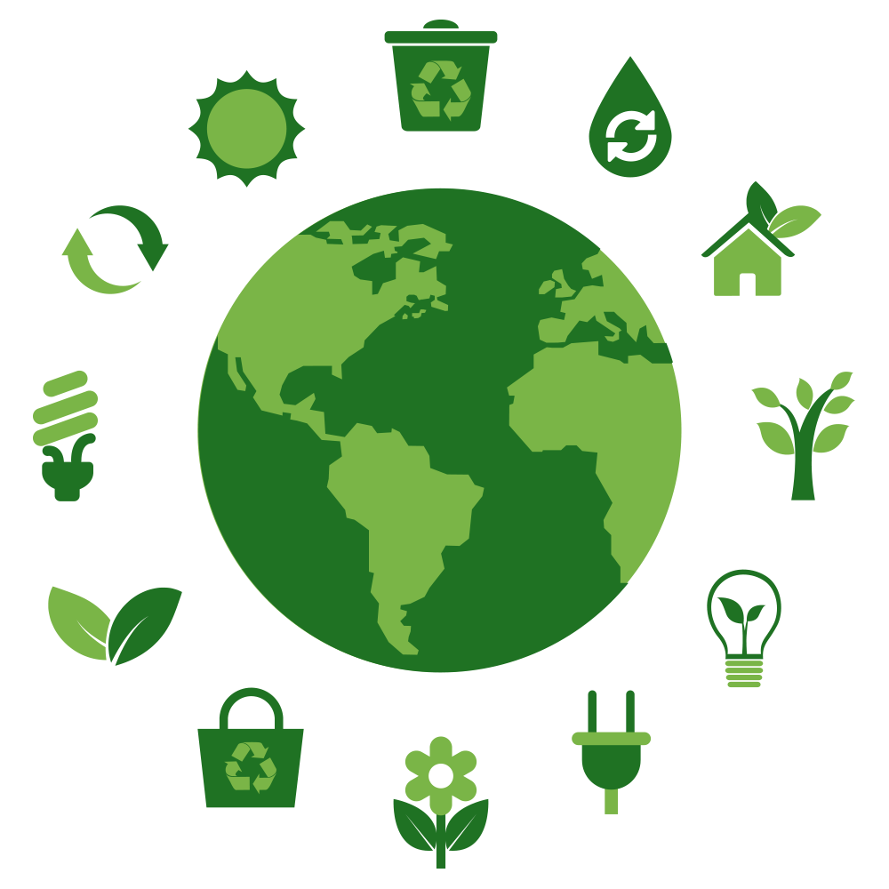
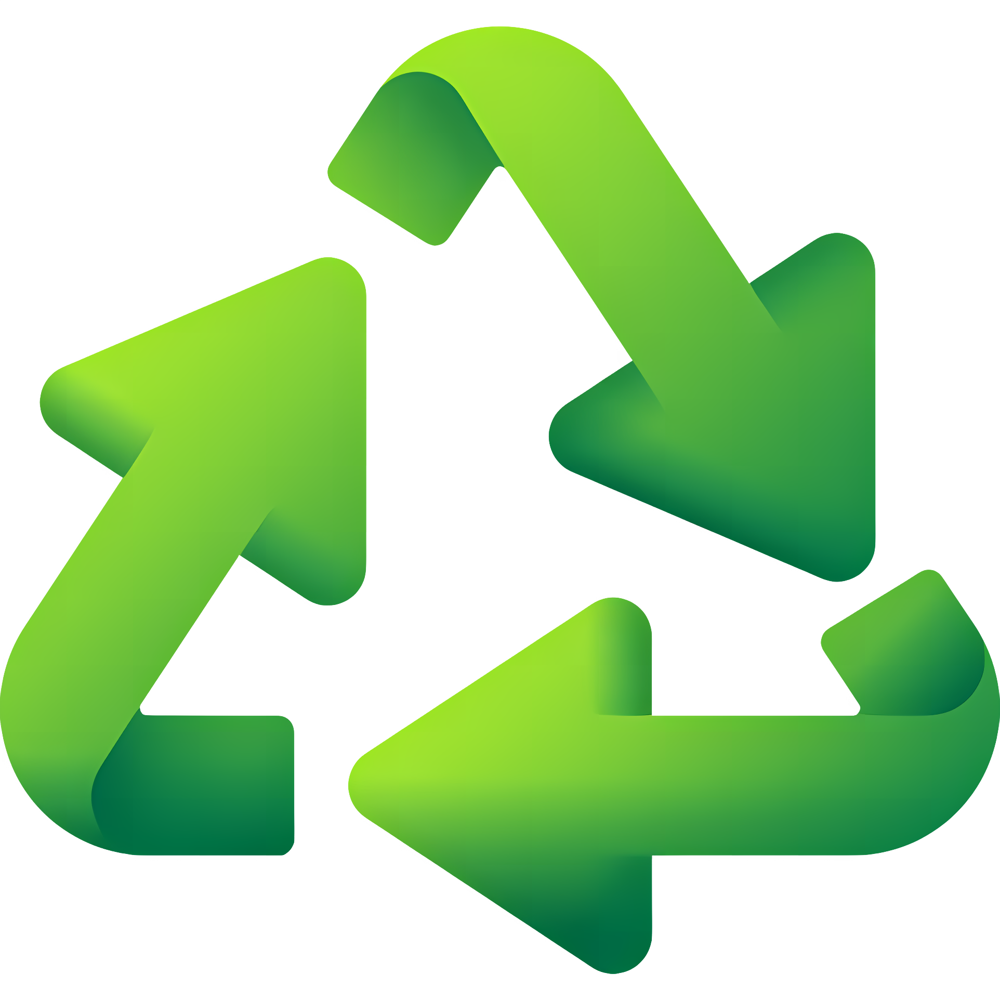
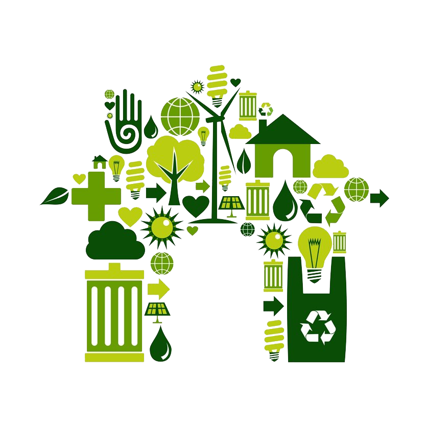
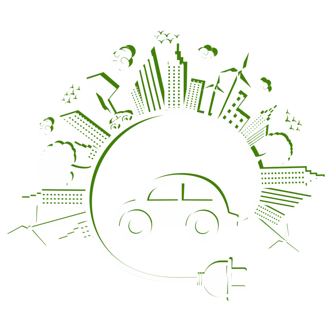

Definição
Sustentabilidade é a capacidade de uso consciente dos recursos naturais sem comprometer o bem-estar das
gerações futuras. Seu objetivo principal é encontrar o equilíbrio entre o desenvolvimento econômico e a
preservação ambiental.

Coleta Seletiva

| Cor | Resíduo | Exemplos |
|---|---|---|
| Amarela | Metal | Latas de refrigerante, latas de alimentos, tampas de alumínio, clipes e grampos |
| Azul | Papel | Jornais, revistas, folhas de caderno, embalagens de papel ou papelão |
| Vermelho | Plástico | Garrafas pet, embalagens de plástico e sacolas de plástico |
| Verde | Vidro | Potes, frascos, garrafas e embalagens de vidro |
Reciclagem
Reciclagem é o processo de reaproveitamento de materiais descartados. Seu objetivo é reintroduzi-los na
cadeia produtiva a fim de que ainda gerem valor e sejam reutilizados, aumentando a preservação dos
recursos naturais e melhorando a qualidade de vida das pessoas.

Energia Limpa
Fontes de Energia Limpa

- Hidráulica
- Eólica
- Solar
- Maremotriz
- Geotérmica